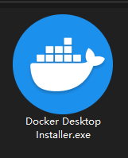
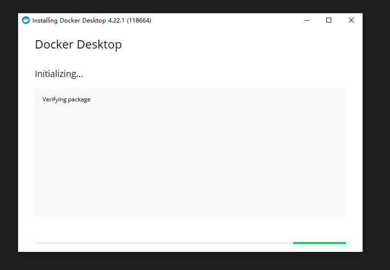
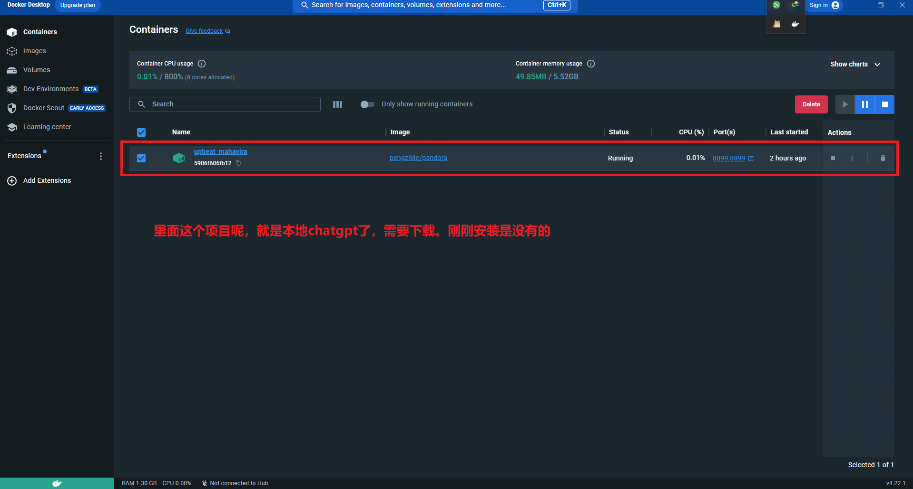
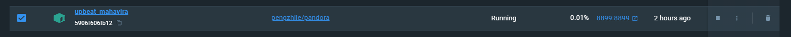
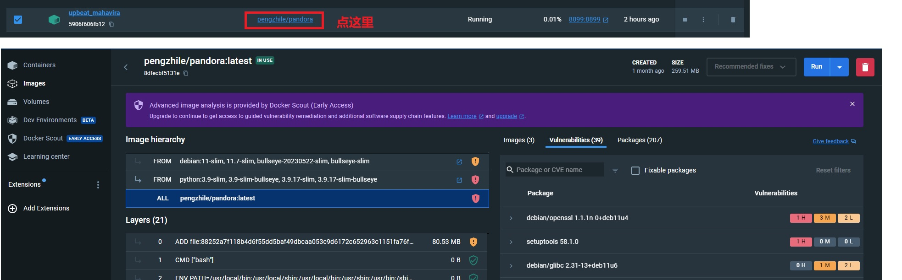
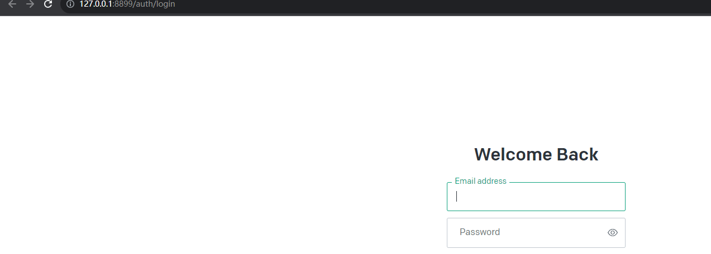
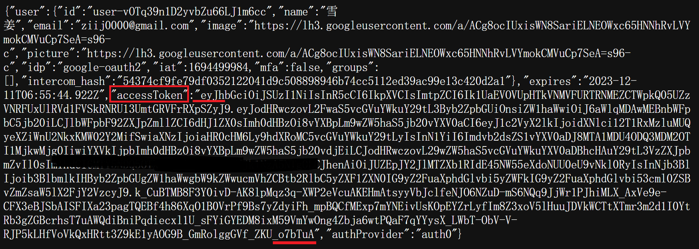
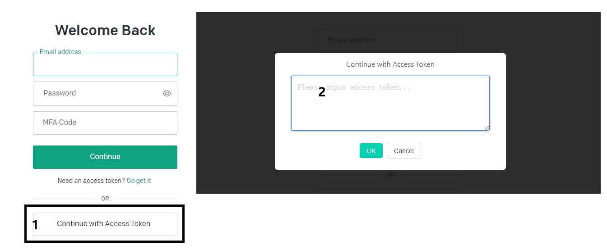
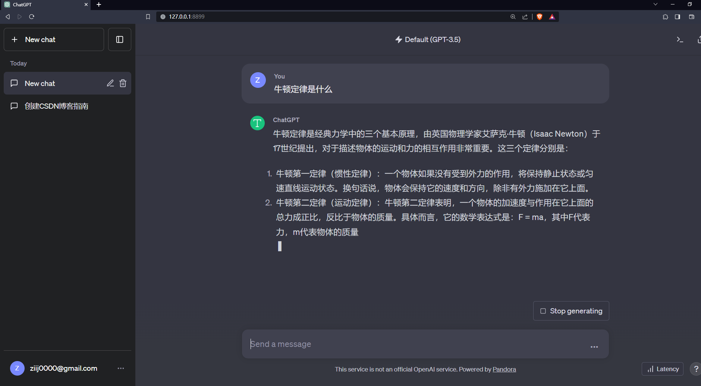

第一步
- 想要搭建本地chatgpt肯定先让电脑科学上网
- 这第二步，那就是下载docker，刀客网址 =>下载刀客
- 下载完刀客之后就会得到这样的一个安装包

这第二部就是安装了

安装完成之后
- 他在安装完成之后可能会提新你，需要升级系统，你就执行wsl --update就可以了，需要注意的是，你要打开PowerShell执行

下载pandora项目
- 打开cmd以次执行
- docker pull pengzhile/pandora
- docker run -e PANDORA_CLOUD=cloud -e PANDORA_SERVER=0.0.0.0:8899 -p 8899:8899 -d pengzhile/pandora
- 执行完成之后docker面板就会出现


demo
- 测试一下有没有搭建成功
- 访问：127.0.0.1:8899

登录
有账号的，登录自己账号即可
推荐Access Token登录，因为只要登录一次，他就会有14天的有效期
那如何获得token呢，首先登录网页版的chatgpt
然后再点击此链接http://chat.openai.com/api/auth/session


